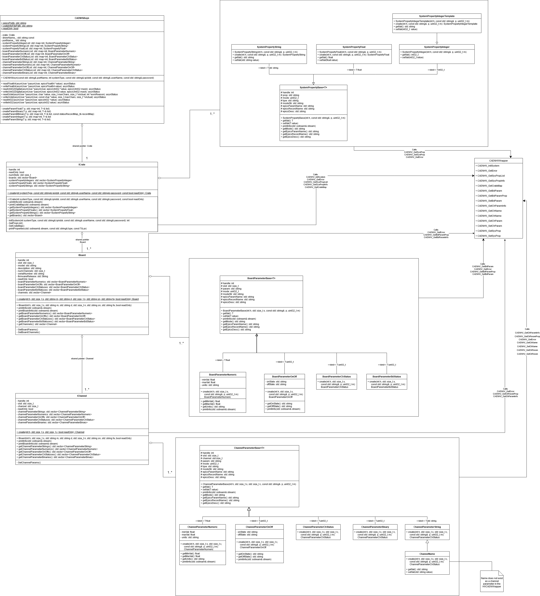

CAEN
A high voltage power supply normally used for detector electronics.
There are now two IOCs devoted to the CAEN. An older one from the Canadian light source (HVCAEN) and a newer one from SLAC (HVCAENA). They are communicated with over Ethernet. HVCAEN is used widely and HVCAENA is to be used on DETMON to test it. HVCAENA has more information available including board and crate parameters. Both IOCs have a read-only mode which can be set via macros.
HVCAEN
Communicating with multiple CAENs (Older IOC)
A single IOC can communicate with up to 8 CAEN crates, this appears to be a limit in the CAEN library as it defines MAX_CRATES as 8 in the library header and has a “too many connections” error code listed in its potential error codes.
To do this the crates must be added into the st.cmd as so:
CAENx527ConfigureCreate "hv0", "_IP_ADDR1_"
CAENx527ConfigureCreate "hv1", "_IP_ADDR2_"
When CAENx527DbLoadRecords is called it will then create PVs of the form hv0:_SLOT_:_CHANNEL_
PVs
The pv setup is a little weird for this device, it looks like value is the setpoint and value:fbk is the readback. So:
pwonoff: sets the power
pwonoff:fbk: readback the value (I am unsure whether this is the setpoint or the status)
Simulation/HVCAENSIM Simulated CAEN (older version of the CAEN)
The HVCAEN SIM IOC uses a simulated Caen library to simulate the CAEN. This does not work completely, current it looks like setting anything does not updates the monitor values.
The SIM also disconnects and reconnects itself every X commands to show that is working.
Finally it looks like the macros SIM, DEVSIM and RECSIM are not respected so you need to set the SIM PV directly.
Troubleshooting
If you run dbl and get mainly standard support IOC PVs check that comms have been established to the given IP address
If you log in to the console and cannot get an EPICS prompt, the whole console/procserv must be restarted, as typically the Ctrl-X option does not work in this situation either
If you can ping and telnet to the crate, but the EPICS driver cannot connect, the crate may need a (physical) power cycle. This is best done by detector group.
You can set HVCAENx527Debug X in the console (or via the st.cmd) with X being a debug level e.g. 5 and the IOC will print debugging information based on the level you have given.
HVCAENA (Newer IOC)
Made up of three levels the IOC level (st.cmd, config etc.), the CPP/Db support level and the CAENHVWrapper level. The CAENHVWrapper is a vendor library that contains methods to set and get data to/from CAEN crates, it is documented in the pdf files that can be found in the CAENHVAsyn support module. The CPP support level was created by SLAC and has been edited by us. The IOC level was created by us to enable use in IBEX.
IOC Level
Currently can communicate with 4 CAEN crates at a time (but very extensible to add more). Set up by defining macros IP_ADDRESS_X and SYS_TYPE_X for X from 0 to 3. Another macro READ_ONLY defines whether we can write to the CAEN crate with 1 for read-only and 0 for read/write.
A crate is loaded in the st.cmd with calls to the support level:
$(IFIP0_PRESENT) CAENHVAsynSetEpicsPrefix("$(MYPVPREFIX)$(IOCNAME):HV0:")
$(IFIP0_PRESENT) CAENHVAsynConfig("HV0",$(SYS_TYPE_0),"$(IP_ADDRESS_0)","username","password")
CAENHVAsynSetEpicsPrefix simply sets the pv prefix in the driver.
CAENHVAsynConfig creates a new CAENHVAsyn object, which loads dbs and creates pvs for system properties, board parameters and channel parameters.
Read/write is set in the st.cmd for all crates with a call to the support level:
CAENHVAsynReadOnly($(READ_ONLY=0)) Set READ_ONLY to 1 for read-only and 0 for read/write.
CAENHVAsyn CPP/Db support level
See UML below for diagram description.
At initialisation of the CAENHVAsyn object, the crates, boards, channels and their properties and parameters are retrieved from the CAENHVWrapper and the support objects are populated from this. The process of retrieving and populating objects is kicked off by the creation of the Crate object (call ICrate:create).
From this data, the dbs are loaded. There are templates for records e.g. ai, ao. These templates are loaded CAENHVAsyn for board parameters, channel parameters and system properties, with fields filled out by passing macros. The read Rd records are loaded with a scan rate of 1 second and write/set St records are set to scan passive. The loading of dbs can be seen in the CAENHVAsyn CPP object’s various createParamX methods with X being replaced by Binary, Integer etc. This process of loading records is initiated by the CAENHVAsynConfig call in the st.cmd.
The CAENHVAsyn object acts as an adapter/facade to the objects it contains: crates, boards, channels. The CAENHVAsyn object overrides asynPortDriver methods, the overriding methods search through channel parameters, board parameters and system properties to find the value to set or get corresponding to the asyn call reason. These various methods often then make calls to the CAENHVWrapper.

Deployment of the HVCAEN and HVCAENA for testing on DETMON
Access the
EPICS_win10_x64build from the instrument and deploy it to the instrument using the install_to_inst.bat scriptWhen finished copying run
create_icp_binaries.batThen copy
msvcr100.dll(there are a few located around the install but not in the right place) toEPICS/crtl